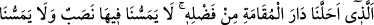
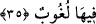

Hazret-i Zât-ı Yezdân’ın civarı olduğu için orada hüzün yoktur. Cennet rızâ, müjde,
sevinç ve hoşnutluk yurdudur.”
Burada hem dünya hem âhiret hüznü murâd edilmektedir. Artık onlara maişet ve geçim
derdi, nimetlerin elden çıkması endişesi, açlık, susuzluk, helal azık, zâlim sultan
korkusu, haset ve çekememezlikten kaynaklanan ayıplama, kin, nefret, öfke, birbirine
buğz etme, haysiyet ve onur kırıcı durumlar, her türlü âfet ve musibetler, iblisin
vesvesesi, günah ve kötülükler, tâat ve ibadetlerin reddedilmesi, kötü son, ölüm,
kıyâmetin şiddet ve dehşetli halleri, cehennem, sırat köprüsünden geçme, ayrılık
endişesi, hal ve ahvâlin düzelmesi için tedbir alma ve daha diğer korkularla ilgili hiç
bir hüzün ve üzüntü isâbet etmeyecektir.
Hadiste şöyle vârid olmuştur: “Lâ ilâhe illallah” ehline kabirde, mahşerde ve
kıyâmette vahşet ve yanlızlık yoktur. Sanki ben “Lâ ilâhe illallah” ehlini görüyor
gibiyim. Onlar yüzlerinden toprağı silerek kabirlerinden çıkarlar ve “Bizden tasayı
gideren Allah’a hamdolsun” derler.”[86]
Ebû Saîd Harrâz (k.s.) der ki, dünyada mârifet ehli olanlar âhirette cennet ehli
gibidirler. Onlar dünyada dünyayı terk ettiler. Dünyada korkusuz ve üzüntüsüz olarak
hamd ve şükürle cennetliklerin hayatı gibi bir hayat sürüp hep mutlu yaşadılar.
Burada huzur erbabının zevki cennettir.
Gönüllerinde sûrun üflenilmesine kadar hüzün ve kederden eser olmaz.
“Doğrusu Rabbimiz” bize iyilik eden, günahkarları “çok bağışlayan” itâatkarlara
“çok nimet verendir.” Allah’ın kullarına teşekkür etmesi, onlara sevap vermesi ve
onları ödüllendirmesi onlara tam ve denk karşılıkla mukabelede bulunmasıdır.
et-Te’vîlâtü’n-Necmiyye’de der ki: Allah Teâlâ nefsine zulmedeni ziyâde
bağışlayıcıdır. Muktesıd ve sâbıka da teşekkür eder. Halleri zayıf, durumları vahim
olduğu için Allah Teâlâ zâlime olan şefkat ve merhametinden dolayı onun
bağışlanmasını öne almıştır.
35. O (Rab) ki lütfuyla bizi asıl oturulacak yurda (cennete) yerleştirdi. Artık
orada bize ne bir yorgunluk dokunacak ne de orada bize bir usanç gelecektir.
“O (Rab) ki” bizim amellerimizden bunu gerektirecek bir şey olmaksızın “lütfuyla”
ve ihsanıyla “bizi asıl oturulacak yurda (cennete) yerleştirdi.”
Yani, kendisinden ebedî intikal edilmeyecek olan ikamet yurduna yerleştirdi ki orada
konaklayan oradan ayrılmak istemez. Kendisinden de oradan ayrılması istenmez.
Kulların yaptıkları iyilikler de yine Allah’ın lütuf ve ihsanıdır. Allah’a hiçbir